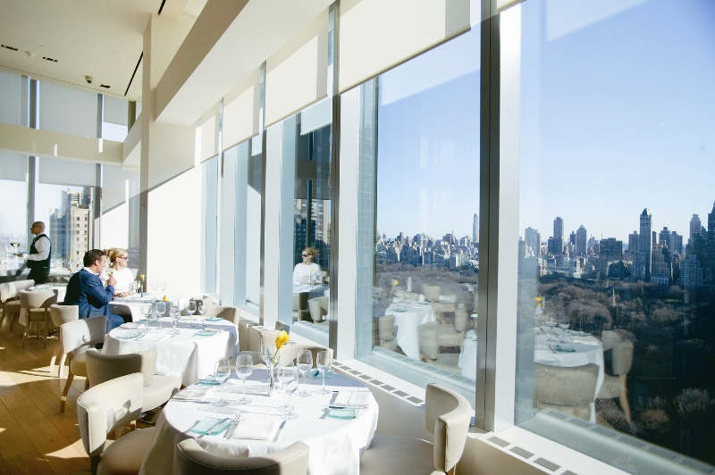
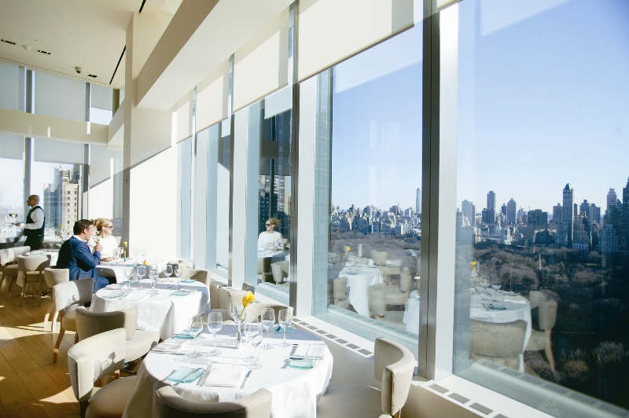
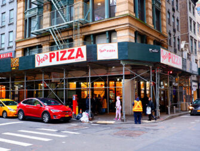
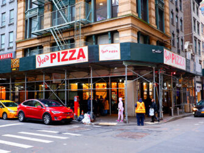

Activities to do in New York
There are a vast range of activities that can be done, whether it is active or not. There are many different activities that can be done as these activities are apart of New York City while enabling satisfaction. With the satisfaction, it can bring feelings of joy and new experiences with the different environment and lifestyle. The entertainment it brings attracts many different visitors as they want to experience them all at once. Many people are attracted to these activites while it creates a connection between the persobal individual being and New York City. Once you go, you will see and feel a sense of belonging to the city of New York.
Do you have a specific budget in mind?
If you do, do not worry! There are many activities you can choose from! During the night time although musicals may be expensive and many people go see them, during that time of the day, you can rather go out a look at the night view of New York! There are also many different cuisines out there and from fine dinings to restaurants and to even some of the most popular food chains. Not only that, there are many transportation methods as you can go on the taxi or even go on the metro or even walk which can save you a lot of money! So if you ever plan on going, think about where you would like to spend your money on!
 

 



Throughout New York, there are so many different places to visit! But if you ever get bored from the typical New York travel guide, try out exploring other parts of New York! You can explore different cultures within New York as some streets have their own street that represents their idenitity as a whole while also trying to share others their culture like Koreatown, Chinatown, and Little Italy!
With the range of activities out there, there can be many different options to choose between while enjoying the life in the city. These activites are full of adventures that bring excitement and allows for more discovery in what there is to do. While choosing between activities, make sure to choose effectively while making sure that they fit within your planned schedule and other activities, making sure that it is balanced but also having a fulfilled no time wasted plan. Therefore, once again, there is no time to waste.